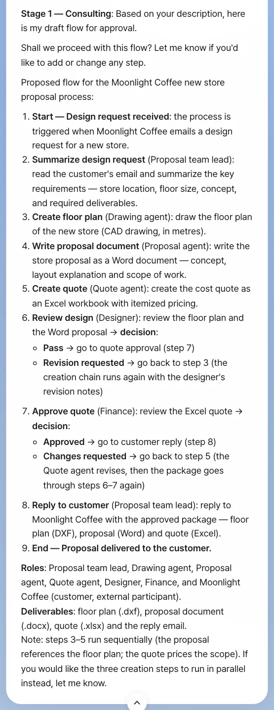
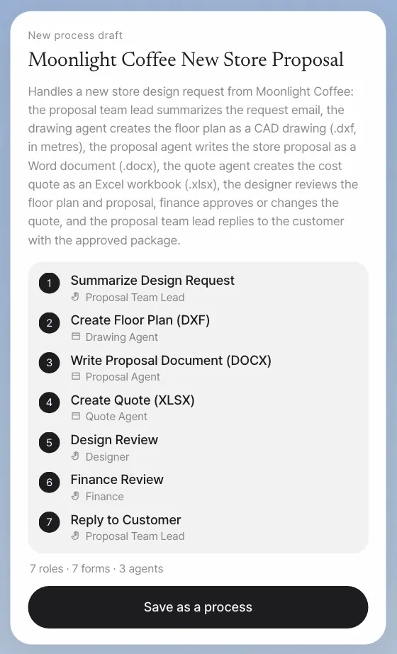
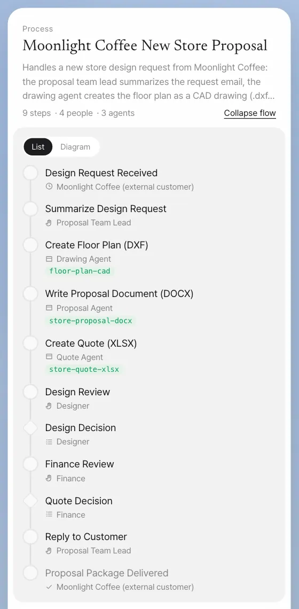
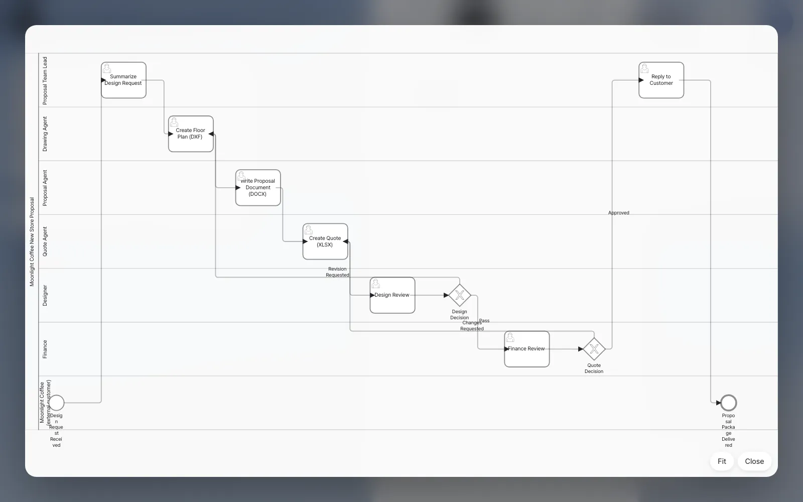

After Store #2, Moonlight Coffee plans to open Store #3 and Store #4. Team lead Jinyoung Jang describes the proposal work the team repeats in the same order every time. The assistant suggests a draft flow, gets her OK, and then builds and saves a process definition with a flow diagram (BPMN), roles and forms.
Why make it a process#
From Chapter 9 to Chapter 16, you handled the Moonlight Coffee Store #2 job case by case. You got the email, the assistant made the floor plan, proposal and quote, Minji Kim checked the design, Seoyeon Park checked the quote, the team met, and you replied. If you have to remember all of that again for every new store, it's easy to miss a step.
A process changes that:
| Case by case | As a process |
|---|---|
| People remember who does what next | The steps and their order live in the definition |
| You share and mention someone every time you hand off | When a step ends, the to-do goes to the owner of the next role on its own |
| You ask an agent every time | Agent steps run on their own |
| You have to ask to know where things stand | The instance screen shows each step (Chapter 18) |
Process creation in Lite uses Process GPT's process-creation skill as is. The result is saved as BPMN. BPMN is an international standard for drawing a workflow as steps, branches and swimlanes (one lane per owner). You don't have to draw it yourself.
Try it 1 — Describe it in your own words#
In chat, signed in as team lead Jinyoung Jang, start with "Create a … process" and write down the order and the owners as far as you know them. We call it the "new store proposal" so it's easy to tell apart from the Moonlight Coffee proposal that Part 6 uses.
Create a Moonlight Coffee new store proposal process. When Moonlight Coffee emails a design request for a new store, the proposal team lead sums up the request. Then a drawing agent makes the floor plan, a proposal agent writes a Word proposal, and a quote agent makes an Excel quote. After that, the designer reviews the floor plan and the proposal, and Finance approves the quote or asks for changes. Once it's approved, the proposal team lead replies to the customer.
The assistant doesn't build the definition right away. It first reads the process-creation skill, then lays out a draft flow at a working level and asks you to confirm. In our run the answer came after about 4 minutes. The draft had nine items, from the start (Moonlight Coffee's design request email) to the end (the proposal delivered). It put the three outputs one after another (floor plan → Word proposal → Excel quote), because the proposal refers to the floor plan and the quote prices the scope, and it offered to run them in parallel instead. It also filled in parts we didn't spell out: a designer's Revision requested goes back to the floor plan, so all three outputs are made again, and a Finance Changes requested goes back to the quote, which then passes the designer's review and Finance again. It ended with the list of roles (including Moonlight Coffee as an external customer) and the deliverables.

Check: the draft has a process name, the role for each step, the branches (Pass / Revision requested at the design review, Approved / Changes requested at the quote approval), and a start and an end. The wording differs from run to run.
If you want to change something, say so now. For example: The floor plan, proposal and quote can be made at the same time · Add a meeting with the proposal team lead before the reply.
Try it 2 — Confirm and build the definition#
If you like the draft, reply:
Yes, go ahead with this and build the Moonlight Coffee new store proposal process definition.
The assistant writes the definition file from the flow you confirmed, picks or creates the skills and agents the agent steps will use, makes a form for each step where a person enters something, and then checks its own work. A new skill is tested too: in our run the assistant ran the floor-plan skill it had written on two sample requests, with and without the skill, and compared the results. When it's done, a New process draft card appears in chat. The card shows the definition this turn wrote, read back from its working folder. A turn that wrote no definition (a draft flow, for example) brings no card.
This takes a while. In our run, the first confirmation brought the draft flow back once more after about 3 minutes, this time naming CADCraft for the floor plan and Google Workspace for the reply. We confirmed again (Yes, that's right. Please build the process definition now.), and the build took about 24 minutes. It created three skills for the agent steps (floor-plan-cad, store-proposal-docx and store-quote-xlsx) and tested floor-plan-cad, and the four test floor plans (.dxf) showed up as file cards just above the draft card. You don't need them. If the reply stops partway or shows the draft flow again, send Please continue or confirm once more.

Check: before you save, the draft card's name, steps and roles match the flow you confirmed. Ours read Summarize Design Request (Proposal Team Lead) → Create Floor Plan (DXF) (Drawing Agent) → Write Proposal Document (DOCX) (Proposal Agent) → Create Quote (XLSX) (Quote Agent) → Design Review (Designer) → Finance Review (Finance) → Reply to Customer (Proposal Team Lead). The 7 roles also count the three agents and Moonlight Coffee as the external customer.
Try it 3 — Save it and view the flow#
Click Save as a process on the draft card. It's saved through Process GPT's own definition save path (2 seconds in our run), and the card turns into a process card with its flow open. Click List or Diagram to switch between the list and the BPMN diagram, and Collapse flow to fold it. Later, Show me the Moonlight Coffee new store proposal process flow brings up the same card (about 12 seconds in our run).


The "9 steps · 4 people · 3 agents" in the card header also counts the two decisions (Design Decision and Quote Decision). The four people steps are Summarize Design Request, Design Review, Finance Review and Reply to Customer. Under the flow, the card shows the form of the first step (Store Location, Floor Size in metres, Store Concept, Required Deliverables, Additional Notes) and Start. Clicking Start starts one run of the process, as in Chapter 18.
Saving also saves the forms, agents and skills
Save as a process saves more than the definition and the BPMN. It also gathers the forms (the input fields of the people steps), agents and skills the assistant made in the working folder, and saves them together. Agents are registered just like agents made in the Process GPT screens and linked to the steps of the definition. If an agent with the same name already exists, that one is used: in our run the Drawing agent, Proposal agent and Quote agent already existed, so the steps were linked to them. Skills are installed as team skills (the three above). The draft card reads the working folder the same way saving does, so its counts are what gets saved: 7 forms in our run.
You can do other work while it's being created
Creating a process runs many steps in one go, so it takes time. Meanwhile, you can send other requests in chat without interrupting it. A request for the same conversation shows Waiting and runs after creation ends; work in other conversations runs side by side (Chapter 3).
The skeleton of the process you made#
The definition the assistant saved in our run:
| Step | Role | Type |
|---|---|---|
| Summarize Design Request | Proposal Team Lead | Person |
| Create Floor Plan (DXF) → Write Proposal Document (DOCX) → Create Quote (XLSX) (one after another) | Drawing, proposal and quote agents | Agent |
| Design Review (Pass / Revision Requested → back to the floor plan) | Designer | Person |
| Finance Review (Approved / Changes Requested → back to the quote) | Finance | Person |
| Reply to Customer | Proposal Team Lead | Person |
An admin sets who holds each role in Settings › Team & roles. A role takes the holder of the team's role with the same name, whatever the capitals, so in our run the designer was Minji Kim, Finance was Seoyeon Park, and the assistant's Proposal Team Lead went to the team's Proposal team lead, Jinyoung Jang. A people role that nobody holds goes to whoever started the process (Chapter 18), so give every new role a holder there.
What makes a good description
- For each step, say who (the role) and what (the output). For example, "the designer reviews the floor plan and the proposal."
- Say where it branches. "Approves or asks for changes" creates a flow that goes back.
- Say where it starts and ends. "When an email comes in," "it ends when we reply to the customer."
- For steps you hand to an agent, name it, as in "the … agent." That links the registered agent and its skills.
Next#
A definition is a blueprint. In the next chapter, you actually start a process and watch to-dos move between people and agents, notifications reach role owners, and progress and outputs build up (Chapter 18). To see one full round quickly, you first run a short example, Travel expense settlement.
Check your understanding
- In our run the draft made the three outputs one after another. Why, and how would you ask to make them in parallel instead?
- If Finance picks Changes Requested, where does the flow go back to, and what happens before Finance sees the quote again?
- When you start this process, who gets the Summarize Design Request step? And who would get it if nobody held that role?
Answer
- The proposal refers to the floor plan and the quote prices the scope, so the assistant kept them in order, and it offered parallel steps itself. Say something like
The floor plan, proposal and quote can be made at the same time from the design brief, and the draft changes to parallel steps. Keeping the order is right when a later output really needs an earlier one. - It goes back to Create Quote (XLSX), where the quote agent revises the quote. Then the designer reviews the package again, and only then does it come back to Finance.
- The proposal team lead, Jinyoung Jang: the assistant's Proposal Team Lead is the team's Proposal team lead, since role names match without regard to capitals. She gets the Reply to Customer step too. If nobody held the role, whoever started the process would get both steps.